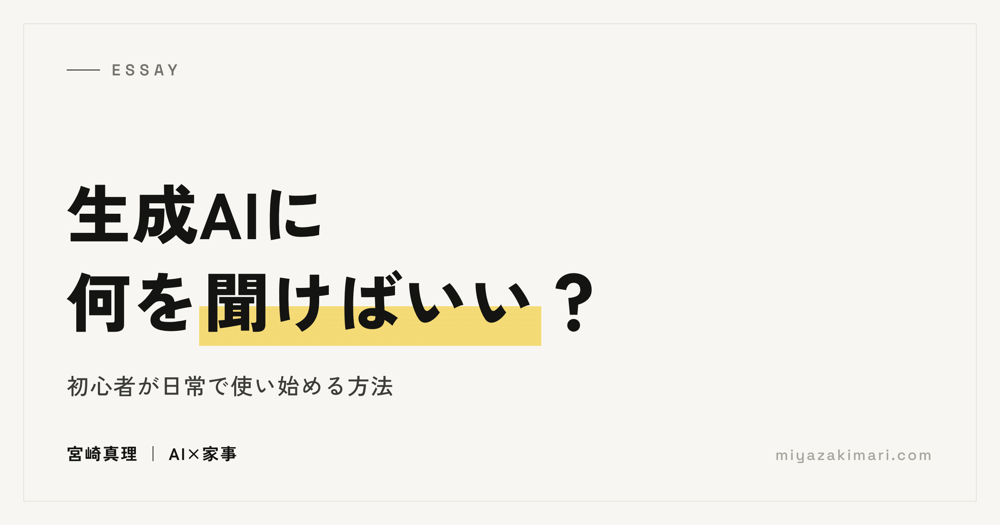
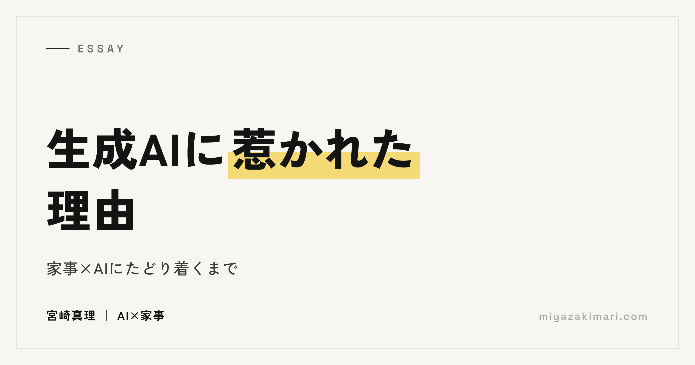

Essays
生成AIと暮らしの話
生成AIを家事や子育てに取り入れて1000日以上。うまくいった方法だけでなく、続かなかったことや、使いながら気づいたことを、暮らしの実例から書いています。
 生成AIで家庭の不便を仕組みにする——家事に正解がなくても役立つ理由家庭ごとに正解が異なる家事でも、生成AIとその家庭に合う仕組みを考える実践です。
生成AIで家庭の不便を仕組みにする——家事に正解がなくても役立つ理由家庭ごとに正解が異なる家事でも、生成AIとその家庭に合う仕組みを考える実践です。

生成AIに何を聞けばいい？日常の小さな質問から使い方を広げる方法すごい活用法を探す前に、日常の小さな疑問から相談できる範囲を広げた過程を紹介します。
私が生成AIに惹かれた理由——家事×AIにたどり着くまで気象予報、生体計測工学、工場のデータ、約10年間の子育てから、生成AIへ関心がつながるまで。 時短もいいけれど。「続かなかったこと」をAIと考える手間が多くて続かなかった図書館の本の管理を例に、時短だけではない変化を考えます。
時短もいいけれど。「続かなかったこと」をAIと考える手間が多くて続かなかった図書館の本の管理を例に、時短だけではない変化を考えます。
 母の手は、よくふさがっている。家庭のAI活用に音声入力が合った理由文字を打つ余裕がない家事・育児の合間に、入力だけを声へ変えた実践です。
母の手は、よくふさがっている。家庭のAI活用に音声入力が合った理由文字を打つ余裕がない家事・育児の合間に、入力だけを声へ変えた実践です。
 知りたいことが、毎日届く。家事から趣味へ、AIと仕組みを作る楽しみ家族の図書館管理からランニングへ。知りたい情報が届く仕組みを、AIと作り育てる実践です。
知りたいことが、毎日届く。家事から趣味へ、AIと仕組みを作る楽しみ家族の図書館管理からランニングへ。知りたい情報が届く仕組みを、AIと作り育てる実践です。